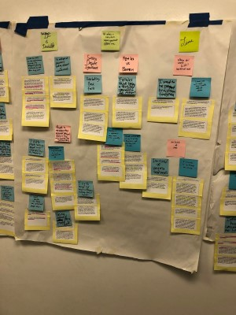
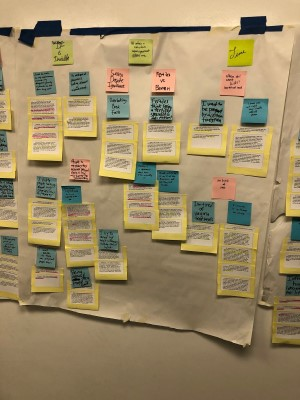

Online Communities
Undergraduate Research Assistant - Behavior, Information and Technology Lab, Michigan State University
Iterative qualitative analysis of subreddit communities for infertility
 

Project Scope
This project began in 2014 and aimed to study mental models of online communities (like forums, wikis, and subreddits) and understand how these mental models were formed, how they evolve, and how they shape expectations for the community. Prior to my involvement beginning in the fall of 2019, these online communities included Bootstrap Wikis and Reddit communities surrounding Bitcoin. The final research project on this grant, which I worked on, centered around Reddit communities for people experiencing infertility and trying to conceive. During the 2019-2020 school year and into the summer of 2020, I worked as part of a team on explorative qualitative coding of conversations within these subreddits to find patterns and themes in the language and described behavior of community members, particularly in relation to each other and in relation to the community itself, and then on writing two academic paper submissions, one for CHI 2020 and one for CSCW 2020.
Process
I was a part of a team including PHD student Megan Knittel, Professor Rick Wash, and one
other undergraduate research assistant, Abi. Throughout the first several months of the project, Megan, Abi,
and I engaged in the iterative development of a codebook to categorize and capture the ideas present in the
subreddit threads we were reading. We spent several months coding threads separately with work in progress versions of the
codebook. During the week, I coded the data and took extensive notes on patterns we were finding. We met weekly to
discuss the ideas each of us were finding and adjust the codes and their definitions accordingly.
This explorative analysis was performed using NVivo.
After several months of qualitative
coding, we developed a refined concept of what direction a paper about our findings. We used
techniques like an affinity wall diagram to help ground our findings in the data, as well as revisiting
the grant proposal the project was based on to stay in scope.
At the beginning of 2020, we worked on a submission for CHI 2020’s Late Breaking Work category, detailing the similarities and differences between the infertility subreddits and the previously studied Bitcoin subreddit. In the spring of 2020, Abi and I created a poster for the University Undergraduate Research and Arts Forum on patterns of ingrouping and outgrouping within the infertility subreddit community, which was not presented due to COVID-19. In the summer of 2020, our submission for CSCW focused on our findings about community members’ usage of self-tracking technologies and how the online community impacted their self-reported behavior and emotional responses to their data. This submission was published in April 2021.